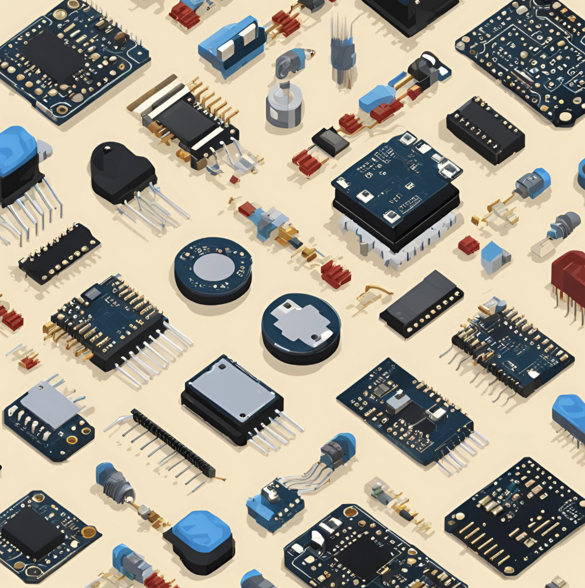
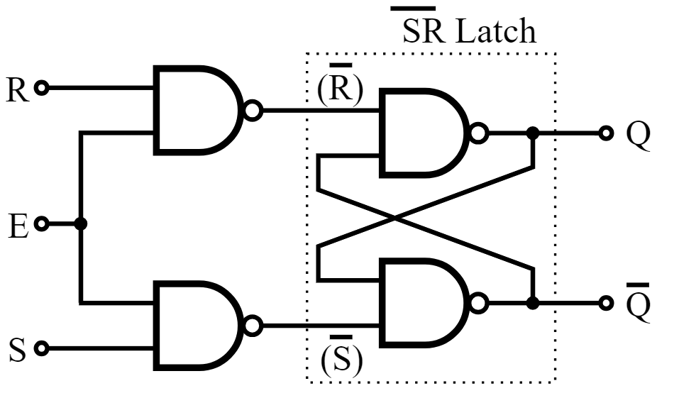
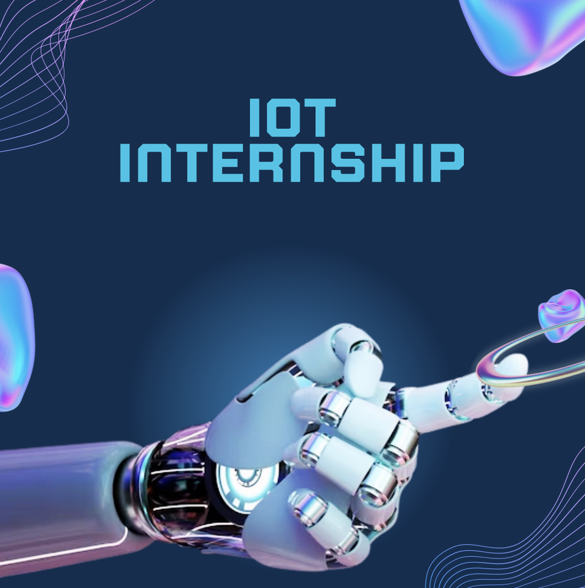
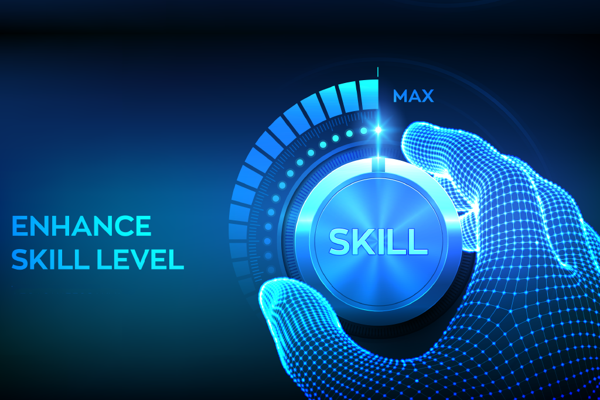

🌈 About Me
🎨 Hello! I'm Sunil Kumar, an Electronics Engineer based in Chennai, Tamil Nadu.
With a strong foundation in technical knowledge and a passion for front-end development,
I specialize in creating seamless user experiences and visually compelling designs.
My goal is to craft digital interfaces that resonate with audiences and drive meaningful engagement.
I'm a creative thinker, a problem solver, and an avid learner, always exploring new trends and techniques in design.
And with a solid foundation in electronics and communication
principles and hands-on experience in simulation tools and programming.

DEEP LEARNING PROJECT
- To detect the presence of Diabetic Retinopathy in diabetes patient.
- Role: Lead Designer
- Tools: Google colab.

HARDWARE PROJECT
- Designed and tested circuitry with op-amps and 555 Timers.
- Role: Lead Designer
- Tools: LTspice, 555 Timers, OP-amp, Ultrasonic Sensor.

VERILOG PROJECT
- Utilized Verilog for the design and simulation of ALU operations and Implemented the design on an FPGA board using Vivado Software.
- Role: Designer
- Tools: FPGA, vivado, Verilog
🎓 Education
Bachelor of Technology - Amrita Vishwa Vidyapeetham, Coimbatore| 2020 - Present
- Currently in 7th Semester with CGPA: 6.83
- Relevant coursework: Electronics and Communication, Front End Development
High School - Velammal Matriculation School, Chennai | 2018 - 2020
- Completed with the percentage of 73.3
- Relevant coursework: Biology, Maths, Physics and Chemistry
High School - St.Vincent Matriculation School, Chennai | 2013 - 2018
- Completed with the percentage of 89.4

💼 Experience
INTERNSHIP - IOT. | Sept 2021 - Nov 2021
- We built a robotic car that we could control just by typing commands into a
serial monitor
- Then, we got into UiPath, this software that helps automate tasks. Our project
here was to formulate were sentences are positive or negative.
We set it up
so that when we gave it a link, it would grab the text, analyze it, and give us
the vibe of whether it was good or bad.
- Lastly, we dived into MIT App Inventor, this cool platform for making mobile
apps. Our task was to create an app that could turn LEDs on and off and show
the changes in real-time on ThingSpeak

🔨Skills
- Data Analysis
- Python
- Front end Development
- Hardware Design
- Software Design
- Verilog
- prototyping and wireframing
